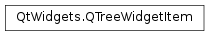

QTreeWidgetItem¶
Synopsis¶
Functions¶
- def
addChild(child) - def
addChildren(children) - def
background(column) - def
backgroundColor(column) - def
checkState(column) - def
child(index) - def
childCount() - def
childIndicatorPolicy() - def
columnCount() - def
emitDataChanged() - def
flags() - def
font(column) - def
foreground(column) - def
icon(column) - def
indexOfChild(child) - def
insertChild(index, child) - def
insertChildren(index, children) - def
isDisabled() - def
isExpanded() - def
isFirstColumnSpanned() - def
isHidden() - def
isSelected() - def
parent() - def
removeChild(child) - def
setBackground(column, brush) - def
setBackgroundColor(column, color) - def
setCheckState(column, state) - def
setChildIndicatorPolicy(policy) - def
setDisabled(disabled) - def
setExpanded(expand) - def
setFirstColumnSpanned(span) - def
setFlags(flags) - def
setFont(column, font) - def
setForeground(column, brush) - def
setHidden(hide) - def
setIcon(column, icon) - def
setSelected(select) - def
setSizeHint(column, size) - def
setStatusTip(column, statusTip) - def
setText(column, text) - def
setTextAlignment(column, alignment) - def
setTextColor(column, color) - def
setToolTip(column, toolTip) - def
setWhatsThis(column, whatsThis) - def
sizeHint(column) - def
sortChildren(column, order) - def
statusTip(column) - def
takeChild(index) - def
takeChildren() - def
text(column) - def
textAlignment(column) - def
textColor(column) - def
toolTip(column) - def
treeWidget() - def
type() - def
whatsThis(column)
Detailed Description¶
The
PySide2.QtWidgets.QTreeWidgetItemclass provides an item for use with thePySide2.QtWidgets.QTreeWidgetconvenience class.Tree widget items are used to hold rows of information for tree widgets. Rows usually contain several columns of data, each of which can contain a text label and an icon.
The
PySide2.QtWidgets.QTreeWidgetItemclass is a convenience class that replaces the QListViewItem class in Qt 3. It provides an item for use with thePySide2.QtWidgets.QTreeWidgetclass.Items are usually constructed with a parent that is either a
PySide2.QtWidgets.QTreeWidget(for top-level items) or aPySide2.QtWidgets.QTreeWidgetItem(for items on lower levels of the tree). For example, the following code constructs a top-level item to represent cities of the world, and adds a entry for Oslo as a child item:cities = QTreeWidgetItem(treeWidget) cities.setText(0, tr("Cities")) osloItem = QTreeWidgetItem(cities) osloItem.setText(0, tr("Oslo")) osloItem.setText(1, tr("Yes"))Items can be added in a particular order by specifying the item they follow when they are constructed:
planets = QTreeWidgetItem(treeWidget, cities) planets.setText(0, tr("Planets"))Each column in an item can have its own background brush which is set with the
PySide2.QtWidgets.QTreeWidgetItem.setBackground()function. The current background brush can be found withPySide2.QtWidgets.QTreeWidgetItem.background(). The text label for each column can be rendered with its own font and brush. These are specified with thePySide2.QtWidgets.QTreeWidgetItem.setFont()andPySide2.QtWidgets.QTreeWidgetItem.setForeground()functions, and read withPySide2.QtWidgets.QTreeWidgetItem.font()andPySide2.QtWidgets.QTreeWidgetItem.foreground().The main difference between top-level items and those in lower levels of the tree is that a top-level item has no
PySide2.QtWidgets.QTreeWidgetItem.parent(). This information can be used to tell the difference between items, and is useful to know when inserting and removing items from the tree. Children of an item can be removed withPySide2.QtWidgets.QTreeWidgetItem.takeChild()and inserted at a given index in the list of children with thePySide2.QtWidgets.QTreeWidgetItem.insertChild()function.By default, items are enabled, selectable, checkable, and can be the source of a drag and drop operation. Each item’s flags can be changed by calling
PySide2.QtWidgets.QTreeWidgetItem.setFlags()with the appropriate value (seeQt.ItemFlags). Checkable items can be checked and unchecked with thePySide2.QtWidgets.QTreeWidgetItem.setCheckState()function. The correspondingPySide2.QtWidgets.QTreeWidgetItem.checkState()function indicates whether the item is currently checked.
Subclassing¶
When subclassing
PySide2.QtWidgets.QTreeWidgetItemto provide custom items, it is possible to define new types for them so that they can be distinguished from standard items. The constructors for subclasses that require this feature need to call the base class constructor with a new type value equal to or greater thanUserType.
-
class
PySide2.QtWidgets.QTreeWidgetItem(view, after[, type=Type])¶ -
class
PySide2.QtWidgets.QTreeWidgetItem(view, strings[, type=Type]) -
class
PySide2.QtWidgets.QTreeWidgetItem(view[, type=Type]) -
class
PySide2.QtWidgets.QTreeWidgetItem(parent, after[, type=Type]) -
class
PySide2.QtWidgets.QTreeWidgetItem(parent, strings[, type=Type]) -
class
PySide2.QtWidgets.QTreeWidgetItem(parent[, type=Type]) -
class
PySide2.QtWidgets.QTreeWidgetItem(strings[, type=Type]) -
class
PySide2.QtWidgets.QTreeWidgetItem(other) -
class
PySide2.QtWidgets.QTreeWidgetItem([type=Type]) Parameters: - strings – list of strings
- type –
PySide2.QtCore.int - other –
PySide2.QtWidgets.QTreeWidgetItem - after –
PySide2.QtWidgets.QTreeWidgetItem - view –
PySide2.QtWidgets.QTreeWidget - parent –
PySide2.QtWidgets.QTreeWidgetItem
Constructs a tree widget item of the specified
typeand inserts it into the givenparentafter theprecedingitem.Constructs a tree widget item of the specified
typeand appends it to the items in the givenparent. The given list ofstringswill be set as the item text for each column in the item.Constructs a tree widget item of the specified
typeand appends it to the items in the givenparent.Constructs a tree widget item of the specified
typethat is inserted into theparentafter theprecedingchild item.Constructs a tree widget item and append it to the given
parent. The given list ofstringswill be set as the item text for each column in the item.Constructs a tree widget item and append it to the given
parent.Constructs a tree widget item of the specified
type. The item must be inserted into a tree widget. The given list ofstringswill be set as the item text for each column in the item.Constructs a copy of
other. Note thatPySide2.QtWidgets.QTreeWidgetItem.type()andPySide2.QtWidgets.QTreeWidgetItem.treeWidget()are not copied.This function is useful when reimplementing
PySide2.QtWidgets.QTreeWidgetItem.clone().Constructs a tree widget item of the specified
type. The item must be inserted into a tree widget.
-
PySide2.QtWidgets.QTreeWidgetItem.ItemType¶ This enum describes the types that are used to describe tree widget items.
Constant Description QTreeWidgetItem.Type The default type for tree widget items. QTreeWidgetItem.UserType The minimum value for custom types. Values below are reserved by Qt. You can define new user types in
PySide2.QtWidgets.QTreeWidgetItemsubclasses to ensure that custom items are treated specially; for example, when items are sorted.
-
PySide2.QtWidgets.QTreeWidgetItem.ChildIndicatorPolicy¶ Constant Description QTreeWidgetItem.ShowIndicator The controls for expanding and collapsing will be shown for this item even if there are no children. QTreeWidgetItem.DontShowIndicator The controls for expanding and collapsing will never be shown even if there are children. If the node is forced open the user will not be able to expand or collapse the item. QTreeWidgetItem.DontShowIndicatorWhenChildless The controls for expanding and collapsing will be shown if the item contains children.
-
PySide2.QtWidgets.QTreeWidgetItem.addChild(child)¶ Parameters: child – PySide2.QtWidgets.QTreeWidgetItemAppends the
childitem to the list of children.
-
PySide2.QtWidgets.QTreeWidgetItem.addChildren(children)¶ Parameters: children – Appends the given list of
childrento the item.
-
PySide2.QtWidgets.QTreeWidgetItem.background(column)¶ Parameters: column – PySide2.QtCore.intReturn type: PySide2.QtGui.QBrushReturns the brush used to render the background of the specified
column.
-
PySide2.QtWidgets.QTreeWidgetItem.backgroundColor(column)¶ Parameters: column – PySide2.QtCore.intReturn type: PySide2.QtGui.QColorThis function is deprecated. Use
PySide2.QtWidgets.QTreeWidgetItem.background()instead.
-
PySide2.QtWidgets.QTreeWidgetItem.checkState(column)¶ Parameters: column – PySide2.QtCore.intReturn type: PySide2.QtCore.Qt.CheckStateReturns the check state of the label in the given
column.See also
PySide2.QtWidgets.QTreeWidgetItem.setCheckState()Qt.CheckState
-
PySide2.QtWidgets.QTreeWidgetItem.child(index)¶ Parameters: index – PySide2.QtCore.intReturn type: PySide2.QtWidgets.QTreeWidgetItemReturns the item at the given
indexin the list of the item’s children.
-
PySide2.QtWidgets.QTreeWidgetItem.childCount()¶ Return type: PySide2.QtCore.intReturns the number of child items.
-
PySide2.QtWidgets.QTreeWidgetItem.childIndicatorPolicy()¶ Return type: PySide2.QtWidgets.QTreeWidgetItem.ChildIndicatorPolicyReturns the item indicator policy. This policy decides when the tree branch expand/collapse indicator is shown.
-
PySide2.QtWidgets.QTreeWidgetItem.clone()¶ Return type: PySide2.QtWidgets.QTreeWidgetItemCreates a deep copy of the item and of its children.
-
PySide2.QtWidgets.QTreeWidgetItem.columnCount()¶ Return type: PySide2.QtCore.intReturns the number of columns in the item.
-
PySide2.QtWidgets.QTreeWidgetItem.data(column, role)¶ Parameters: - column –
PySide2.QtCore.int - role –
PySide2.QtCore.int
Return type: Returns the value for the item’s
columnandrole.- column –
-
PySide2.QtWidgets.QTreeWidgetItem.emitDataChanged()¶ Causes the model associated with this item to emit a
PySide2.QtCore.QAbstractItemModel.dataChanged()() signal for this item.You normally only need to call this function if you have subclassed
PySide2.QtWidgets.QTreeWidgetItemand reimplementedPySide2.QtWidgets.QTreeWidgetItem.data()and/orPySide2.QtWidgets.QTreeWidgetItem.setData().
-
PySide2.QtWidgets.QTreeWidgetItem.flags()¶ Return type: PySide2.QtCore.Qt.ItemFlagsReturns the flags used to describe the item. These determine whether the item can be checked, edited, and selected.
The default value for flags is
Qt.ItemIsSelectable|Qt.ItemIsUserCheckable|Qt.ItemIsEnabled|Qt.ItemIsDragEnabled|Qt.ItemIsDropEnabled.
-
PySide2.QtWidgets.QTreeWidgetItem.font(column)¶ Parameters: column – PySide2.QtCore.intReturn type: PySide2.QtGui.QFontReturns the font used to render the text in the specified
column.
-
PySide2.QtWidgets.QTreeWidgetItem.foreground(column)¶ Parameters: column – PySide2.QtCore.intReturn type: PySide2.QtGui.QBrushReturns the brush used to render the foreground (e.g. text) of the specified
column.
-
PySide2.QtWidgets.QTreeWidgetItem.icon(column)¶ Parameters: column – PySide2.QtCore.intReturn type: PySide2.QtGui.QIconReturns the icon that is displayed in the specified
column.
-
PySide2.QtWidgets.QTreeWidgetItem.indexOfChild(child)¶ Parameters: child – PySide2.QtWidgets.QTreeWidgetItemReturn type: PySide2.QtCore.intReturns the index of the given
childin the item’s list of children.
-
PySide2.QtWidgets.QTreeWidgetItem.insertChild(index, child)¶ Parameters: - index –
PySide2.QtCore.int - child –
PySide2.QtWidgets.QTreeWidgetItem
Inserts the
childitem atindexin the list of children.If the child has already been inserted somewhere else it won’t be inserted again.
- index –
-
PySide2.QtWidgets.QTreeWidgetItem.insertChildren(index, children)¶ Parameters: - index –
PySide2.QtCore.int - children –
Inserts the given list of
childreninto the list of the item children atindex.Children that have already been inserted somewhere else won’t be inserted.
- index –
-
PySide2.QtWidgets.QTreeWidgetItem.isDisabled()¶ Return type: PySide2.QtCore.boolReturns
trueif the item is disabled; otherwise returnsfalse.
-
PySide2.QtWidgets.QTreeWidgetItem.isExpanded()¶ Return type: PySide2.QtCore.boolReturns
trueif the item is expanded, otherwise returnsfalse.
-
PySide2.QtWidgets.QTreeWidgetItem.isFirstColumnSpanned()¶ Return type: PySide2.QtCore.boolReturns
trueif the item is spanning all the columns in a row; otherwise returnsfalse.
-
PySide2.QtWidgets.QTreeWidgetItem.isHidden()¶ Return type: PySide2.QtCore.boolReturns
trueif the item is hidden, otherwise returnsfalse.
-
PySide2.QtWidgets.QTreeWidgetItem.isSelected()¶ Return type: PySide2.QtCore.boolReturns
trueif the item is selected, otherwise returnsfalse.
-
PySide2.QtWidgets.QTreeWidgetItem.__lt__(other)¶ Parameters: other – PySide2.QtWidgets.QTreeWidgetItemReturn type: PySide2.QtCore.boolReturns
trueif the text in the item is less than the text in theotheritem, otherwise returnsfalse.
-
PySide2.QtWidgets.QTreeWidgetItem.parent()¶ Return type: PySide2.QtWidgets.QTreeWidgetItemReturns the item’s parent.
-
PySide2.QtWidgets.QTreeWidgetItem.read(in)¶ Parameters: in – PySide2.QtCore.QDataStreamReads the item from stream
in. This only reads data into a single item.
-
PySide2.QtWidgets.QTreeWidgetItem.removeChild(child)¶ Parameters: child – PySide2.QtWidgets.QTreeWidgetItemRemoves the given item indicated by
child. The removed item will not be deleted.
-
PySide2.QtWidgets.QTreeWidgetItem.setBackground(column, brush)¶ Parameters: - column –
PySide2.QtCore.int - brush –
PySide2.QtGui.QBrush
Sets the background brush of the label in the given
columnto the specifiedbrush.- column –
-
PySide2.QtWidgets.QTreeWidgetItem.setBackgroundColor(column, color)¶ Parameters: - column –
PySide2.QtCore.int - color –
PySide2.QtGui.QColor
This function is deprecated. Use
PySide2.QtWidgets.QTreeWidgetItem.setBackground()instead.- column –
-
PySide2.QtWidgets.QTreeWidgetItem.setCheckState(column, state)¶ Parameters: - column –
PySide2.QtCore.int - state –
PySide2.QtCore.Qt.CheckState
Sets the item in the given
columncheck state to bestate.- column –
-
PySide2.QtWidgets.QTreeWidgetItem.setChildIndicatorPolicy(policy)¶ Parameters: policy – PySide2.QtWidgets.QTreeWidgetItem.ChildIndicatorPolicySets the item indicator
policy. This policy decides when the tree branch expand/collapse indicator is shown. The default value is ShowForChildren.
-
PySide2.QtWidgets.QTreeWidgetItem.setData(column, role, value)¶ Parameters: - column –
PySide2.QtCore.int - role –
PySide2.QtCore.int - value – object
Sets the value for the item’s
columnandroleto the givenvalue.The
roledescribes the type of data specified byvalue, and is defined by theQt.ItemDataRoleenum.Note
The default implementation treats
Qt.EditRoleandQt.DisplayRoleas referring to the same data.- column –
-
PySide2.QtWidgets.QTreeWidgetItem.setDisabled(disabled)¶ Parameters: disabled – PySide2.QtCore.boolDisables the item if
disabledis true; otherwise enables the item.
-
PySide2.QtWidgets.QTreeWidgetItem.setExpanded(expand)¶ Parameters: expand – PySide2.QtCore.boolExpands the item if
expandis true, otherwise collapses the item.Warning
The
PySide2.QtWidgets.QTreeWidgetItemmust be added to thePySide2.QtWidgets.QTreeWidgetbefore calling this function.
-
PySide2.QtWidgets.QTreeWidgetItem.setFirstColumnSpanned(span)¶ Parameters: span – PySide2.QtCore.boolSets the first section to span all columns if
spanis true; otherwise all item sections are shown.
-
PySide2.QtWidgets.QTreeWidgetItem.setFlags(flags)¶ Parameters: flags – PySide2.QtCore.Qt.ItemFlagsSets the flags for the item to the given
flags. These determine whether the item can be selected or modified. This is often used to disable an item.
-
PySide2.QtWidgets.QTreeWidgetItem.setFont(column, font)¶ Parameters: - column –
PySide2.QtCore.int - font –
PySide2.QtGui.QFont
Sets the font used to display the text in the given
columnto the givenfont.- column –
-
PySide2.QtWidgets.QTreeWidgetItem.setForeground(column, brush)¶ Parameters: - column –
PySide2.QtCore.int - brush –
PySide2.QtGui.QBrush
Sets the foreground brush of the label in the given
columnto the specifiedbrush.- column –
-
PySide2.QtWidgets.QTreeWidgetItem.setHidden(hide)¶ Parameters: hide – PySide2.QtCore.boolHides the item if
hideis true, otherwise shows the item.Note
A call to this function has no effect if the item is not currently in a view. In particular, calling
setHidden(true)on an item and only then adding it to a view will result in a visible item.
-
PySide2.QtWidgets.QTreeWidgetItem.setIcon(column, icon)¶ Parameters: - column –
PySide2.QtCore.int - icon –
PySide2.QtGui.QIcon
Sets the icon to be displayed in the given
columntoicon.- column –
-
PySide2.QtWidgets.QTreeWidgetItem.setSelected(select)¶ Parameters: select – PySide2.QtCore.boolSets the selected state of the item to
select.
-
PySide2.QtWidgets.QTreeWidgetItem.setSizeHint(column, size)¶ Parameters: - column –
PySide2.QtCore.int - size –
PySide2.QtCore.QSize
Sets the size hint for the tree item in the given
columnto besize. If no size hint is set, the item delegate will compute the size hint based on the item data.- column –
-
PySide2.QtWidgets.QTreeWidgetItem.setStatusTip(column, statusTip)¶ Parameters: - column –
PySide2.QtCore.int - statusTip – unicode
Sets the status tip for the given
columnto the givenstatusTip.PySide2.QtWidgets.QTreeWidgetmouse tracking needs to be enabled for this feature to work.- column –
-
PySide2.QtWidgets.QTreeWidgetItem.setText(column, text)¶ Parameters: - column –
PySide2.QtCore.int - text – unicode
Sets the text to be displayed in the given
columnto the giventext.- column –
-
PySide2.QtWidgets.QTreeWidgetItem.setTextAlignment(column, alignment)¶ Parameters: - column –
PySide2.QtCore.int - alignment –
PySide2.QtCore.int
Sets the text alignment for the label in the given
columnto thealignmentspecified (seeQt.AlignmentFlag).- column –
-
PySide2.QtWidgets.QTreeWidgetItem.setTextColor(column, color)¶ Parameters: - column –
PySide2.QtCore.int - color –
PySide2.QtGui.QColor
This function is deprecated. Use
PySide2.QtWidgets.QTreeWidgetItem.setForeground()instead.- column –
-
PySide2.QtWidgets.QTreeWidgetItem.setToolTip(column, toolTip)¶ Parameters: - column –
PySide2.QtCore.int - toolTip – unicode
Sets the tooltip for the given
columntotoolTip.- column –
-
PySide2.QtWidgets.QTreeWidgetItem.setWhatsThis(column, whatsThis)¶ Parameters: - column –
PySide2.QtCore.int - whatsThis – unicode
Sets the “What’s This?” help for the given
columntowhatsThis.- column –
-
PySide2.QtWidgets.QTreeWidgetItem.sizeHint(column)¶ Parameters: column – PySide2.QtCore.intReturn type: PySide2.QtCore.QSizeReturns the size hint set for the tree item in the given
column(seePySide2.QtCore.QSize).
-
PySide2.QtWidgets.QTreeWidgetItem.sortChildren(column, order)¶ Parameters: - column –
PySide2.QtCore.int - order –
PySide2.QtCore.Qt.SortOrder
Sorts the children of the item using the given
order, by the values in the givencolumn.Note
This function does nothing if the item is not associated with a
PySide2.QtWidgets.QTreeWidget.- column –
-
PySide2.QtWidgets.QTreeWidgetItem.statusTip(column)¶ Parameters: column – PySide2.QtCore.intReturn type: unicode Returns the status tip for the contents of the given
column.
-
PySide2.QtWidgets.QTreeWidgetItem.takeChild(index)¶ Parameters: index – PySide2.QtCore.intReturn type: PySide2.QtWidgets.QTreeWidgetItemRemoves the item at
indexand returns it, otherwise return 0.
-
PySide2.QtWidgets.QTreeWidgetItem.takeChildren()¶ Return type: Removes the list of children and returns it, otherwise returns an empty list.
-
PySide2.QtWidgets.QTreeWidgetItem.text(column)¶ Parameters: column – PySide2.QtCore.intReturn type: unicode Returns the text in the specified
column.
-
PySide2.QtWidgets.QTreeWidgetItem.textAlignment(column)¶ Parameters: column – PySide2.QtCore.intReturn type: PySide2.QtCore.intReturns the text alignment for the label in the given
column(seeQt.AlignmentFlag).
-
PySide2.QtWidgets.QTreeWidgetItem.textColor(column)¶ Parameters: column – PySide2.QtCore.intReturn type: PySide2.QtGui.QColorThis function is deprecated. Use
PySide2.QtWidgets.QTreeWidgetItem.foreground()instead.
-
PySide2.QtWidgets.QTreeWidgetItem.toolTip(column)¶ Parameters: column – PySide2.QtCore.intReturn type: unicode Returns the tool tip for the given
column.
-
PySide2.QtWidgets.QTreeWidgetItem.treeWidget()¶ Return type: PySide2.QtWidgets.QTreeWidgetReturns the tree widget that contains the item.
-
PySide2.QtWidgets.QTreeWidgetItem.type()¶ Return type: PySide2.QtCore.intReturns the type passed to the
PySide2.QtWidgets.QTreeWidgetItemconstructor.
-
PySide2.QtWidgets.QTreeWidgetItem.whatsThis(column)¶ Parameters: column – PySide2.QtCore.intReturn type: unicode Returns the “What’s This?” help for the contents of the given
column.
-
PySide2.QtWidgets.QTreeWidgetItem.write(out)¶ Parameters: out – PySide2.QtCore.QDataStreamWrites the item to stream
out. This only writes data from one single item.
© 2018 The Qt Company Ltd. Documentation contributions included herein are the copyrights of their respective owners. The documentation provided herein is licensed under the terms of the GNU Free Documentation License version 1.3 as published by the Free Software Foundation. Qt and respective logos are trademarks of The Qt Company Ltd. in Finland and/or other countries worldwide. All other trademarks are property of their respective owners.